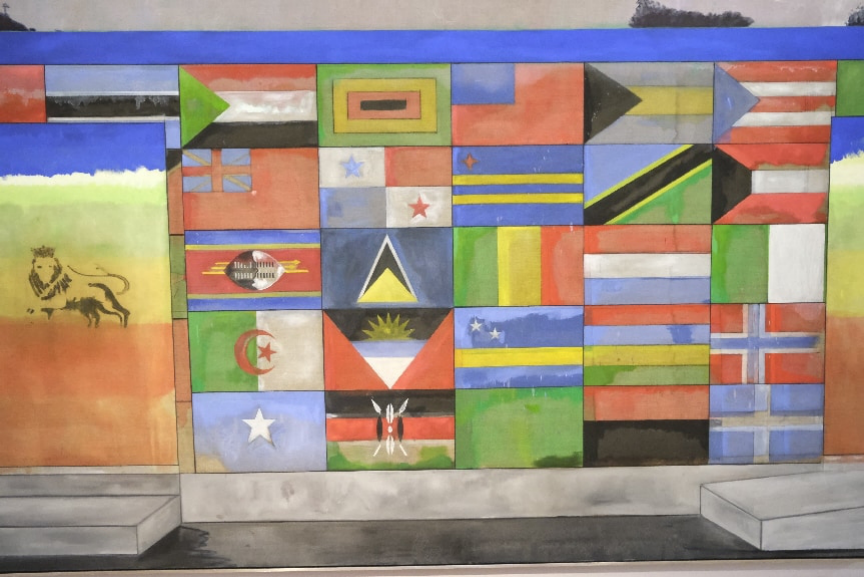
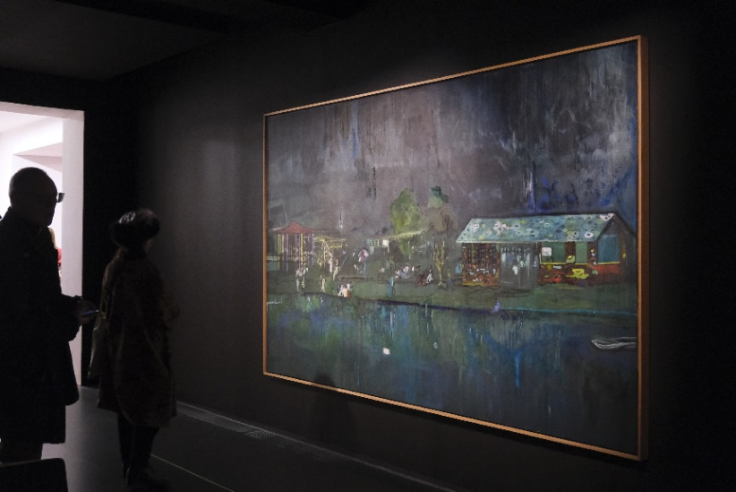
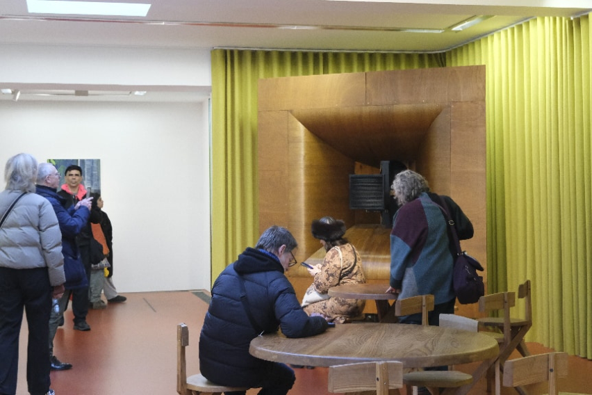

Qianying Wang
It was a foggy winter’s day in London when I entered Hyde Park through Victoria Gate and followed Carriage Drive towards Kensington Gardens to visit Peter Doig’s exhibition House of Music at Serpentine South. The exhibition was named one of The Guardian ’s best art exhibitions of 2025 and selected for Artlyst ’s annual Critics’ Choice, bringing together twenty-two of Doig’s paintings and two historic sound systems, while nearly sixty listening events involved more than sixty musicians, artists and music producers, including both individuals and groups. It was on view at Serpentine South in London from 10 October 2025 to 8 February 2026. The Serpentine Gallery's distinctive location and layout let House of Music disrupt the white cube's usual rhythm where an implicit route otherwise pulls visitors forward in a single direction. Here, the exhibition quietly returned the choice of entry to visitors, honoring the widest possible range of visual perception.
At the entrance to the south gallery, Painting for Wall Painters (Prosperity P.o.S.) (2010–12) can be read as the origin of this phenomenon. Doig had once listened to Jamaican music at the Prosperity Club in Port of Spain and photographed a mural left unfinished there, an image he would later carry into his own painting. From the outset, the image therefore underwent several transfers, an anonymous painter left an image on the wall, Doig saw and photographed it, and years later the photograph and memory re-entered the canvas through painting. This same transformation lives on in the figurative motifs. Doig and Emheyo "Embah" Bahabba shared a studio for fourteen years, and it was music, the cuatro, conversation, a life lived alongside one another, that became the shape of Doig's remembering. Embah died in 2015; Both Embah in Paris , in the south gallery, and I Do Not Sing Because I Am Happy… (2017), in the east gallery, were painted into that absence, so the figures arrived already as memory, already as elegy. Winston “Shadow” Bailey died in 2018, Shadow followed the year after, and House of Music takes its very title from his song “Dat Soca Boat,” as if the painting could keep singing what the man no longer could.

In the north gallery, ringed by the lion imagery Doig has returned to most often, stood the operating heart of the exhibition's two great sound systems, while their bodies were placed in the east and west galleries, all sourced and restored by Laurence Passera of DSP London. One was a wooden Klangfilm Euronor from the 1950s, the other a Western Electric/Bell Labs system built for cinema between the late 1920s and early 1930s. Staff let the music fall where it fell, sometimes at random, sometimes by request, drawn from decades of Doig’s own records and tapes and from the evening and Sunday performances the Sound Service team wove through the exhibition’s four months. No two visits unfolded to exactly the same soundtrack, giving tangible form to Doig's own observation, “the paintings don't change but the music does.”1
Low Adirondack chairs sat in the east gallery, facing the enormous cinema loudspeakers, echoing the StudioFilmClub Doig had founded in Trinidad. Visitors settled in and lingered, their gaze passing slowly from Music of the Future to Blue Nude to the speakers themselves, as though following one continuous night in Savannah Park that Doig had folded into the painting, when a steel band's rehearsal swelled through the darkness until the sound seemed to take on a body of its own. Yet the finished image refused to simply reproduce that place; it fused the memory of Trinidad with a photograph of a lakeside in Tamil Nadu, India, until what remained was a nocturne belonging nowhere. As the next song rose, one painting's edges gave way, and the sensation around it, image and sound both, became continuous with the next. The west gallery gathered round tables and low chairs into something like a café. Perhaps mid-conversation a particular rhythm would suddenly pull the eye toward the grass green of Maracas (2002–2008), a green that seemed bound to the sound system itself, a real loudspeaker having entered memory, memory having become painting, until the loudspeaker inside the canvas met an actual vintage loudspeaker many years later. A kindred speaker resurfaces in Speaker/Girl (2015), painted still later, where a piece of music could suddenly set these long-silent objects trembling into life, opening onto a field of association that simply absorbs the looking.
1 Serpentine, “'The Paintings Don’t Change but the Music Does’ – Peter Doig on House of Music ,” accessed September 14, 2026, https://www.serpentinegalleries.org/watch/the-paintings-dont-change-but-the-music-does-peter-doig-on-house-of-music/


Disorder, instability and coordination across media and senses are prominent features of contemporary visual reception. The collaboration with musicians also naturally raises the question of whether it was intended to create a richer and more immersive “installation” experience. Independent curator Nico Kos Earle described House of Music as a “generous and multisensory exhibition”, praising the way sound conveyed the musicality of Doig’s practice.2 Art critic Sue Hubbard remained cautious, questioning whether transforming the entire gallery into a large-scale installation carried a degree of self-indulgence and, through a hypothetical comparison with Picasso and The Rite of Spring , asking whether music remained necessary when the paintings themselves were already sufficiently powerful. As she writes, “These paintings can speak for themselves.”3
As an artist, what I see is a team, led by Serpentine programme director and chief curator Lizzie Carey-Thomas together with the participating musicians, quietly revealing how sound enters Doig's paintings, closely echoing the way he has long built his work. This act carries a considerable force of its own. It offers and shares how music, memory, and atmosphere shape our perception of art, and it asks the artist to take private, intangible experience and rebuild it as spatial relation. Some measure of artistic self-centredness is unavoidable here, since he remains the principal maker of the space. Yet as he explained, “it is like putting the paintings out in public, it is about making these private systems public, so other people can share the experience.”4 The viewer becomes something closer to a guest, weighing and dwelling on the paintings through a filter of memory, so that each person arrives at a different meaning on the other side.
2 Nico Kos-Earle, “Peter Doig,” in “Critics’ Choice: Best UK Art Exhibitions 2025,” Artlyst , December 17, 2025, https://artlyst.com/critics-choice-best-uk-art-exhibitions-2025-artlyst/
3 Sue Hubbard, “Peter Doig House of Music Serpentine South,” Artlyst , October 22, 2025, https://artlyst.com/peter-doig-house-of-music-serpentine-south-sue-hubbard/
4 Nargess Banks, “Peter Doig Turns Serpentine Into a Living Soundscape with 'House of Music,’” Forbes , October 10, 2025, updated October 11, 2025, https://www.forbes.com/sites/nargessbanks/2025/10/10/peter-doig-house-of-music-serpentine/
This openness conception was already visible in Doig's 2023 project Reflets du siècle at the Musée d'Orsay, where works he chose from the museum's modern collection stood beside his own, allowing different images and histories to enter into dialogue within a shared space. Something like Deleuze's "logic of sensation" seemed to be at play, colour, rhythm, and form growing suddenly more forceful under the pressure of sound, their meaning never quite settling. Perhaps gestures, of itself, toward the possibility of dispersed attention within contemporary encounters with painting, where sustained contemplation of a single canvas is only one mode of looking, and sound, space, movement, and painting can meet to produce, through their friction alone, an aesthetic experience of equal depth.
The materials from which a painting rises never quite line up with one another, and it is precisely the gap opened by that misalignment that Doig has always painted. A few chairs cannot make Kensington Gardens identical to Port of Spain, nor to the places held in Doig's memory, the feeling stays fluid, still forming itself under the pressure of time, imagination, and whatever surrounds it. When Doig reasserted the relevance of painting in the 1990s, he folded these experiences into atmospheric scenes crowded with mysterious figures and symbolic patterns, scenes that keep unfolding across time and place until the boundary with reality begins to dissolve. For him, viewing is no longer a single, closing judgment but something closer to hearing the same record again at a different stage of life, still leaning on memory while leaving room for deviation and chance to return. Viewing therefore happens not only when the eye meets the canvas, but after it turns away, when it comes back, and in the way a painting no longer in view goes on quietly altering the next one.
Someone who saw Music of the Future on a Tuesday and returned on a Sunday would find the same painting, and yet no longer the same exhibition. This structure of return leads finally back to Doig himself. House of Music marked his return to Serpentine South more than thirty years after he first showed there in 1991, as a finalist for the Barclays Young Artist Award. The space, once a tea room, recovered through this exhibition something of that earlier, looser sociability. Here Doig set aside, for a while, the image of the star artist known for record auction prices, staff invited children to hunt down every lion hidden across the galleries, and strangers paused to talk simply because of the music, the seating, the works around them. Serpentine artistic director Hans Ulrich Obrist named House of Music among Artnet's most important exhibitions of 2025 for exactly this reason, that its real achievement was to let viewing become, once again, something people could share.
Bibliography
Banks, Nargess. “Peter Doig Turns Serpentine Into a Living Soundscape with ‘House of Music.’” Forbes , October 10, 2025. Updated October 11, 2025. https://www.forbes.com/sites/nargessbanks/2025/10/10/peter-doig-house-of-musi c-serpentine/.
Hubbard, Sue. “Peter Doig House of Music Serpentine South.” Artlyst , October 22, 2025.
https://artlyst.com/peter-doig-house-of-music-serpentine-south-sue-hubbard/.
Kos-Earle, Nico. “Peter Doig.” In “Critics’ Choice: Best UK Art Exhibitions 2025.” Artlyst , December 17, 2025.
https://artlyst.com/critics-choice-best-uk-art-exhibitions-2025-artlyst/.
Serpentine. “‘The Paintings Don’t Change but the Music Does’ – Peter Doig on House of Music .” Accessed September 14, 2026.
Qianying Wang holds an MA in Contemporary Art Theory from the University of Edinburgh, and is currently a PhD candidate at Nanjing University.
Email: yizumisanago322@gmail.com Tel: +44 07751224560
All photographs © Qianying Wang, 2026. Non-commercial editorial use only. No alteration, adaptation, derivative use, or further reproduction without prior written permission.